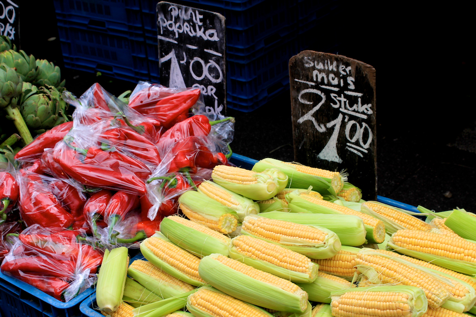

Meneer van Mourik
Buy:
- cucumber
- fresh cilantro (koriander)
- carrot
- daikon (rettich)
- large shallot
- ginger
- jalapeño pepper
| Ingredient | 1 person | 2 persons | 3 persons |
|---|---|---|---|
| Cucumber | 1 | 1 | 1 |
| Cilantro | 1 bunch | 1 bunch | 1 bunch |
| Fresh Ginger | 1 piece | 1 piece | 1 piece |
| Garlic | 1 bulb | 1 bulb | 1 bulb |
| Shallot | 1 | 1 | 1 |
| Carrot | 1 | 1 | 1 |
| Daikon | 1 | 1 | 1 |
| Jalapeño pepper | 1 | 2 | 2 |
To continue with the tour, walk out of the shop and to the right. The next page will automatically load.